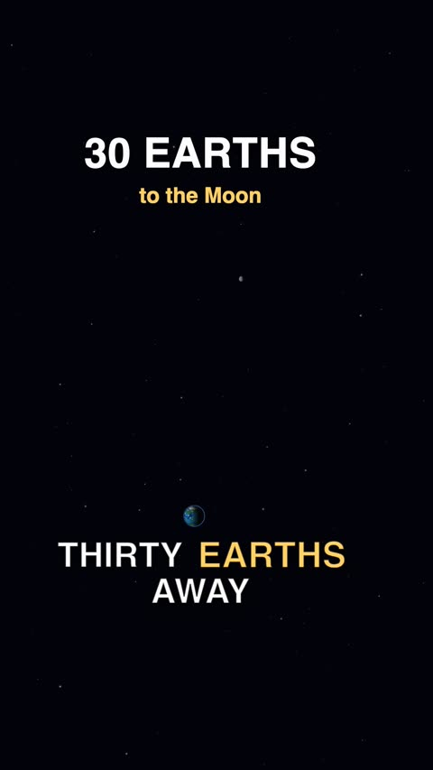
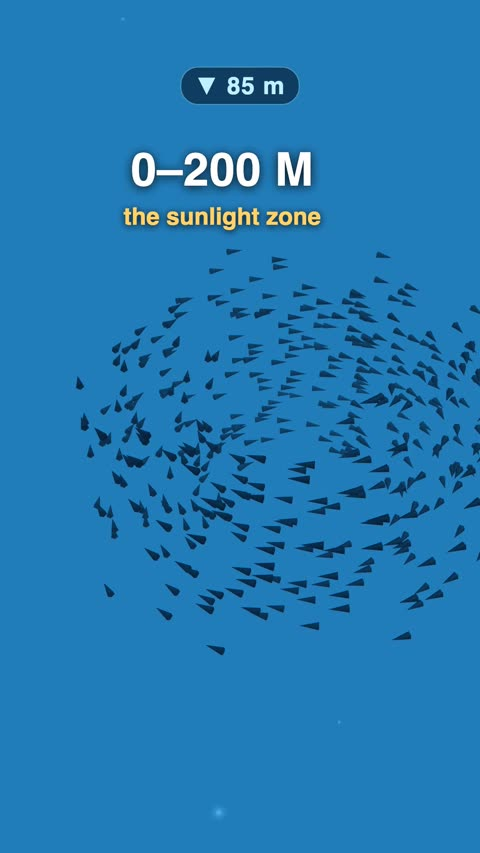
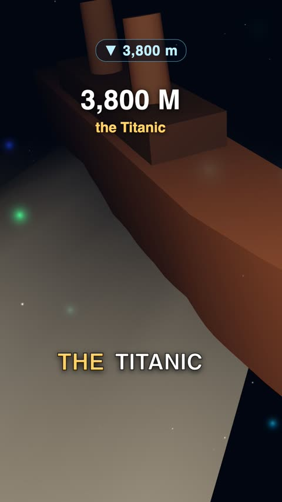
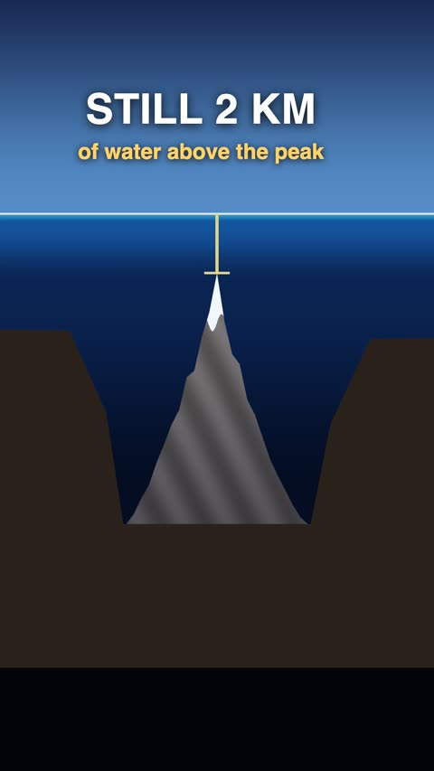

The world, made visible
Cedar makes short, immersive 3D videos about space, nature, wildlife and the human body. One fascinating question, one camera journey, and real numbers with sources.
Watch on YouTube How we make them



What we explore
Space
How big, how far, how fast, at true scale.
Nature
Oceans, trees, lightning and the ground beneath us.
Wildlife
Animals next to a human, so size and power finally make sense.
Human body
Fly inside cells, organs and the brain.
Health
What sleep, exercise and illness really do inside you.
How we make them
Fact-checked
Every number is checked against a trusted source (NASA, NOAA, NIH, and others), and the sources are listed in each video's description.
Built in 3D
Scenes are generated with code (procedural 3D), so we can show things no camera can film.
Openly AI-assisted
The narration is an AI voice, and production is assisted by AI tools. A person reviews every video before it is published.